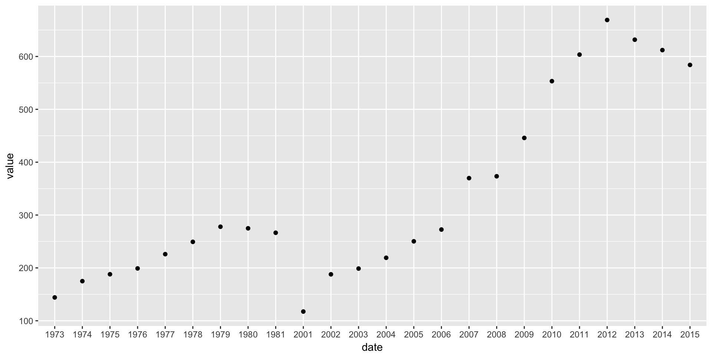
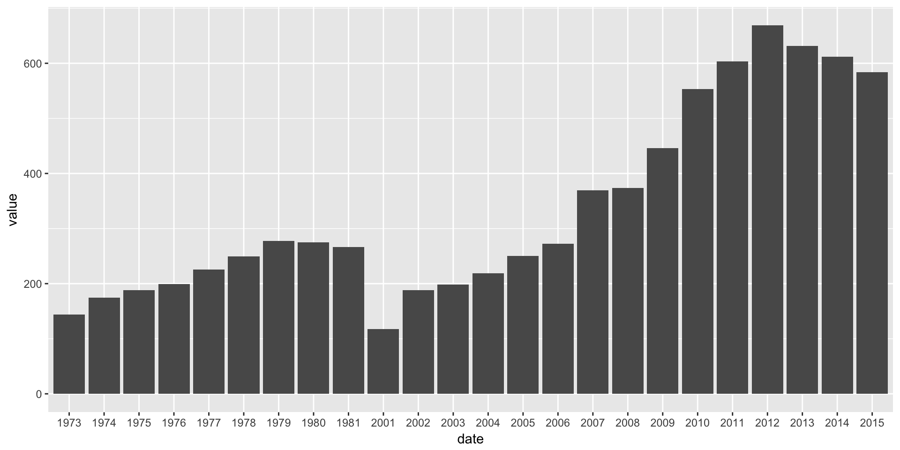
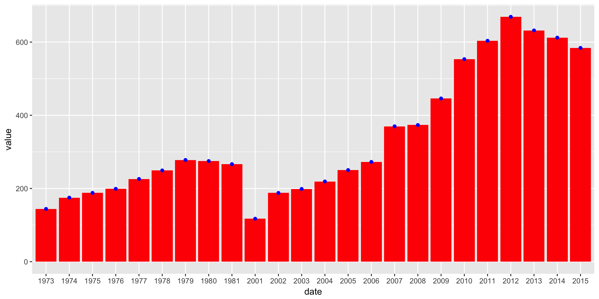
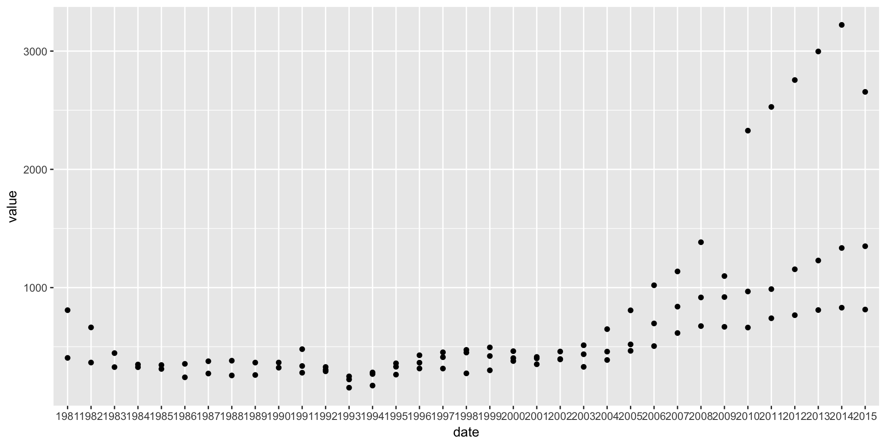
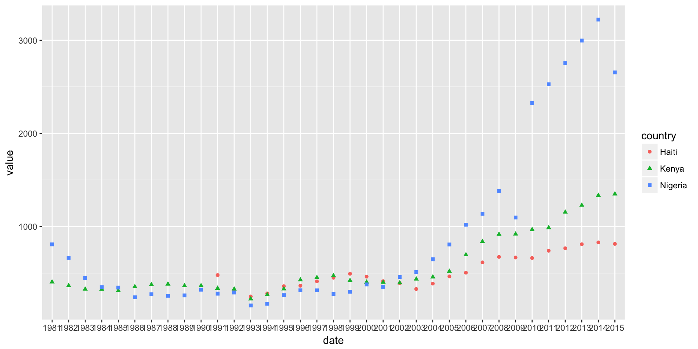
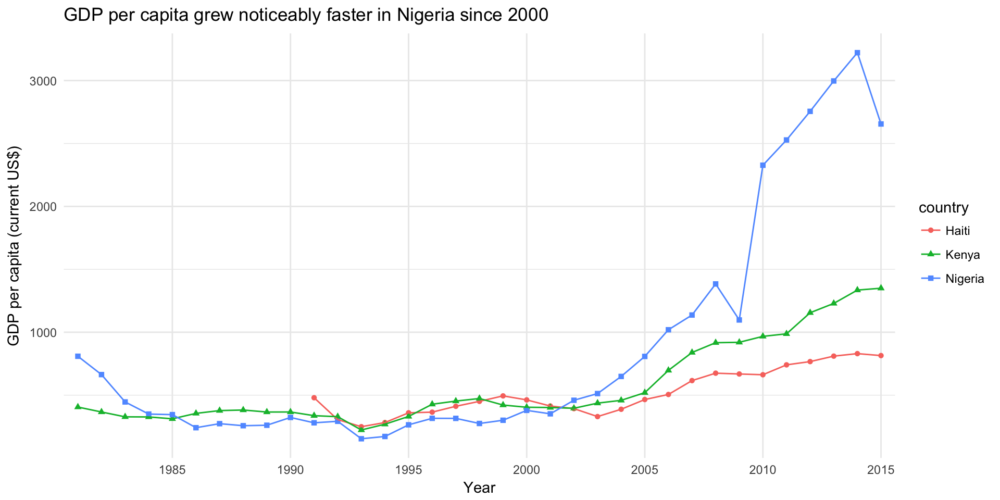

4 Intro to R with the World Bank API
R/RStudio is a statistical programming environment, much like Stata, SAS or SPSS. If you’ve never used such a thing, it’s comparable to Excel, except that instead of focusing on data as Excel does, we’ll focus on what we’re doing to the data (the code).
R is the language we code in, and the R program runs that code. RStudio provides a nice graphical environment for writing and executing code, and viewing the results. Normally you don’t need to distinguish between them: nearly everyone who uses R also uses RStudio.
4.1 Installing R and RStudio
World Bank computers don’t have R and RStudio installed by default, so you’ll have to make a software installation request in eServices. The great thing is both are free, so there’s no charge to worry about getting approved.
4.2 Running RStudio for the first time
Once you have it installed, launch RStudio. You should see a window a bit like this (this is on a Mac, but in Windows it will look similar):
Screenshot of the RStudio user interface
The window is divided into four panes:
- top-left: the file editor - this is basically a text editor. It’s where you’ll write code that you want to keep track of, like the .do file editor in Stata.
- bottom-left: the console - this is like the windows command line. It’s where you type commands that you want to be executed immediately, and where results are displayed.
- top-right: don’t worry about this for now
- bottom-right: once we make them, plots will display here. You can also use the ‘Help’ tab to access help on functions.
4.3 Installing packages
One of R’s strongest features is a vibrant ecosystem of people who write extra functionality. R has a basic set of features built in, but often you’ll want to use these extra features (called “packages”). To do so, you need to install them, but that’s very easy.
There are two we’ll use here: - wbstats is a package you can use to access the World Bank data API (but we didn’t have to write it - an external researcher did! that’s the benefit we get by opening our API). - tidyverse is actually a package-of-packages that includes tools to help load, transform and visualize data.
We can install them by running the following commands. You can either copy these lines to the editor window, then select them and press Ctrl+Enter, or you can type them directly into the console window. (This will be true for the rest of the tutorial - lines that appear in grey boxes are things you should run in R.)
install.packages("wbstats") # one of the libraries that connects with the WB API
install.packages("tidyverse") # a collection of useful packages for manipulating & displaying dataIn R, anything following a “#” symbol is treated as a comment, and ignored.
You only have to install packages once. Once you have, they’ll be available to load each time you run R.
4.4 Loading and viewing data
First we’re going to load some data from the API, and examine it. First we need to make sure the wbstats package is loaded (unlike installing it, we have to do this each time we restart R). As before, run these lines in RStudio:
library(wbstats)Don’t worry if nothing appeared to happen. The library command only prints output if something goes wrong. You can test this out with the following, which should print an error message:
library(not_a_real_library)Okay, now that the wbstats package is loaded we can use it to get some data.
df <- wb(country = "AF", indicator = "NY.GDP.PCAP.CD", startdate = 1973, enddate = 2015)This command loads data from the API and stores it as a dataset called ‘df’. In R, a standard tabular dataset is called a ‘data frame’, so you will often see people use ‘df’ as a shorthand. We could - and probably should - have named it more imaginatively.
Let’s try it again with a better name.
gdp_data <- wb(country = "AF", indicator = "NY.GDP.PCAP.CD", startdate = 1973, enddate = 2015)Now the data is loaded, but in R, unlike Excel, you can’t automatically see data that you’re working on. There are various other commands we can use to understand what the data frame looks like. Try each of these in turn:
nrow(gdp_data) # Prints the number of rows in the data frame## [1] 24ncol(gdp_data) # Prints the number of columns in the data frame## [1] 6summary(gdp_data) # Prints a statistical summary of the data frame variables (columns)## value date indicatorID indicator
## Min. :117.4 Length:24 Length:24 Length:24
## 1st Qu.:199.0 Class :character Class :character Class :character
## Median :269.5 Mode :character Mode :character Mode :character
## Mean :337.1
## 3rd Qu.:472.7
## Max. :669.0
## iso2c country
## Length:24 Length:24
## Class :character Class :character
## Mode :character Mode :character
##
##
## head(gdp_data) # Prints the first few rows## value date indicatorID indicator iso2c
## 1 584.0259 2015 NY.GDP.PCAP.CD GDP per capita (current US$) AF
## 2 612.0697 2014 NY.GDP.PCAP.CD GDP per capita (current US$) AF
## 3 631.7450 2013 NY.GDP.PCAP.CD GDP per capita (current US$) AF
## 4 669.0091 2012 NY.GDP.PCAP.CD GDP per capita (current US$) AF
## 5 603.5370 2011 NY.GDP.PCAP.CD GDP per capita (current US$) AF
## 6 553.3003 2010 NY.GDP.PCAP.CD GDP per capita (current US$) AF
## country
## 1 Afghanistan
## 2 Afghanistan
## 3 Afghanistan
## 4 Afghanistan
## 5 Afghanistan
## 6 Afghanistantail(gdp_data) # Prints the last few rows## value date indicatorID indicator iso2c
## 38 249.2874 1978 NY.GDP.PCAP.CD GDP per capita (current US$) AF
## 39 226.0053 1977 NY.GDP.PCAP.CD GDP per capita (current US$) AF
## 40 199.0262 1976 NY.GDP.PCAP.CD GDP per capita (current US$) AF
## 41 187.9756 1975 NY.GDP.PCAP.CD GDP per capita (current US$) AF
## 42 174.9420 1974 NY.GDP.PCAP.CD GDP per capita (current US$) AF
## 43 144.1103 1973 NY.GDP.PCAP.CD GDP per capita (current US$) AF
## country
## 38 Afghanistan
## 39 Afghanistan
## 40 Afghanistan
## 41 Afghanistan
## 42 Afghanistan
## 43 AfghanistanFinally, RStudio provides a very useful way to view a whole data frame:
View(gdp_data)4.5 Basic plotting in R using ggplot
There are multiple different ways to produce a plot in R. We’re going to use the ggplot package (version 2), which is part of the tidyverse that we installed earlier.
ggplot embodies a very particular, strong philosophy of plots, which separates different aspects of the charts construction. This takes a while to figure out, but is very powerful once you understand it. For now, just follow along with the examples.
The other thing that maybe confusing with ggplot is that it uses the + sign to compose plots from component parts. Again, for now just accept that this is so, and recognise that here + is not adding numbers but adding graphical elements together.
Let’s try a simple example using the GDP data we loaded earlier.
library(ggplot2) # Load the ggplot library
ggplot(gdp_data, aes(x = date, y = value)) +
geom_point() 
One thing you may notice is that the example is broken up into two lines. Unlike some other programming languages, R is very forgiving about how you break lines. It sees the + symbol and knows to expect a continuation on the next line. Because ggplot statements can be quite long, it’s conventional to break them up like this.
Let’s break the example down.
The first line library(ggplot2) just loads the ggplot2 library so we can use it.
The second line (ignoring the blank) sets up the overall structure of the plot. The ggplot function does this, and it takes two main parameters. - the first parameter is the data frame containing the source data we want to plot - the second parameter describes the ‘aesthetics’ of the chart, which means the mapping betweent the data and the physical appearance. Here, we want date (actually, year) to appear on the x-axis and value to appear on the y-axis.
The third lines specifies what kind of geometric representation we want to use. By specifying geom_point() we get points, so a scatter plot. But we can easily change this to a column chart by changing the geometry:
ggplot(gdp_data, aes(x = date, y = value)) +
geom_col()
And because of the way ggplot breaks plots into components, we can also have both, should we want it. (We’ll also see how we can use color.)
ggplot(gdp_data, aes(x = date, y = value)) +
geom_col(fill = "red") +
geom_point(color = "blue")
4.6 A more complex example.
Let’s add some more countries, to a get a more interesting chart. We have to use the API again to do this.
df <- wb(country = c("NG","HT","KE"),
indicator = "NY.GDP.PCAP.CD",
startdate = 1981, enddate = 2015)Notice again how we broke the command over three lines to make it easier to read. Use the summary commands we introduced earlier (summary, head, View, etc.) to check that we got what we expected.
Now we’ll plot these as before.
ggplot(df, aes(x = date, y = value)) +
geom_point()
But this isn’t ideal - we can’t really tell the three series apart. What we need is to use different colors or different symbols (shapes) for each country. In ggplot, those are both additional aesthetics, just like x and y. We just have to assign the country variable to them and ggplot will take care of the rest.
ggplot(df, aes(x = date, y = value, color = country, shape = country)) +
geom_point()
Finally, we can add a line layer, and generally tidy things up for a more presentable plot.
ggplot(df, aes(x = date, y = value, color = country, shape = country, group = country)) +
geom_point() +
geom_line() +
labs(title = "GDP per capita grew noticeably faster in Nigeria since 2000") +
xlab("Year") +
ylab("GDP per capita (current US$)") +
scale_x_discrete(breaks=seq(1985,2015,5)) +
theme_minimal() +
theme(panel.grid.minor.x = element_blank())
You can experiment with these different components to see the effect it has on the plot. And remember you can always type: ? followed by a function in the Console to get help in r, for example ?labs.
Often you don’t know what the name is for a function, so it’s hard to search for it like that. For example, ggplot has automatically placed the legend at the right, but perhaps we’d like it at the top.
To find out how to do something unfamiliar, it’s often enough to Google “ggplot2 place legend at top”. Either of the first couple of hits tell us we need to use theme(legend.position="top") to do this. Try adding it to see what happens!